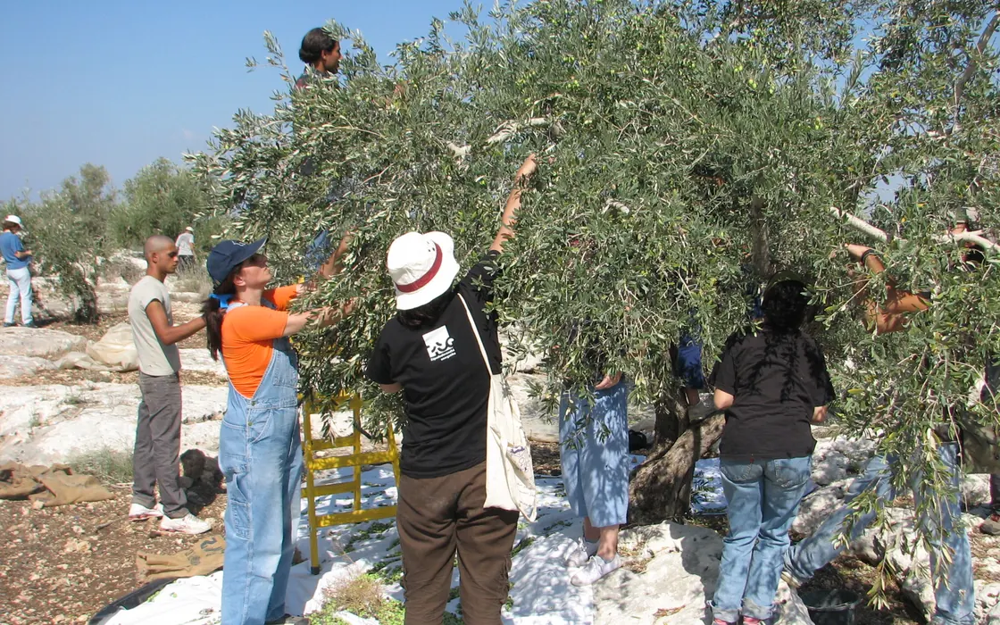

The olive harvest in numbers: 377 settler attacks since September, more than any season on UN record
OCHA counted 377 harvest-related settler attacks between 1 September and 2 November, more than in any previous olive season it has recorded.

377. That is the number of olive-harvest-related attacks by Israeli settlers that the UN humanitarian office OCHA recorded across the West Bank between 1 September and 2 November, each one causing casualties, property damage or both. It is higher than the total for any previous harvest season in the office's records. For comparison, a group of UN experts said on 19 October that 178 such attacks were documented during the whole of the 2025 harvest, affecting 88 towns and villages.
457. OCHA logged that many settler attacks of all kinds in October up to the 31st, the highest monthly figure since the UN began documenting such incidents in 2006. In the week of 27 October to 2 November alone there were 64 attacks in 48 communities, against a weekly average of 53 for 2026. Fifty-eight Palestinians were injured that week, 43 of them by settlers and 15 by Israeli forces, and 44 of the injuries were linked to the harvest.
674. The Palestinian Authority's Wall and Settlement Resistance Commission uses a wider definition that also counts actions by soldiers. It documented 674 attacks on farmers and olive trees between 1 October and 6 November, 520 by settlers and 154 by Israeli forces. Nablus governorate recorded 230, Ramallah and al-Bireh 130 and Salfit 129, together almost three quarters of the total. The commission counted 407 attacks in the 2024 season and 333 in 2023.
2,974. That is the commission's estimate of olive trees damaged so far, and it says figures were unavailable for some incidents. It also lists 91 cases of olives being stolen, 37 thefts or confiscations of equipment, 76 physical assaults and 249 incidents of intimidation. One Palestinian died of wounds from settler gunfire sustained while harvesting, the commission said. Its figures are its own and are not directly comparable with OCHA's.
15. In Deir Ammar, west of Ramallah, access to groves near a settlement was limited to three days and to 15 farmers aged over 40, OCHA reported; an 82-year-old farmer there was assaulted. In Beit Iksa, near Jerusalem, farmers were forced out of their groves despite prior coordination with the army, and settlers reportedly picked about 30 trees. Eight of the week's 41 harvest incidents took place in Areas A and B, which are under Palestinian civil administration.
42. That is the age of Samar Zidan, who was picking olives with her husband and children west of Deir Istiya, in Salfit governorate, on 11 November when she was hit in the head by a stone thrown by settlers, according to local sources quoted by WAFA. Her injury was described as moderate. Residents say attacks in the area have increased since a herding outpost was set up nearby.
80 per cent. Aid groups have supplied harvesting tools and machinery in nearly 80 per cent of identified hotspots, OCHA says, and volunteers provide a protective presence in the groves. But the office concedes that in most places help reaches only a limited number of pickers, because of funding shortfalls, violence and Israeli restrictions. The UN experts warned that destroying a mature olive tree costs a family far more than one season's crop.
On the record
Reported from the sources above, in our own words.